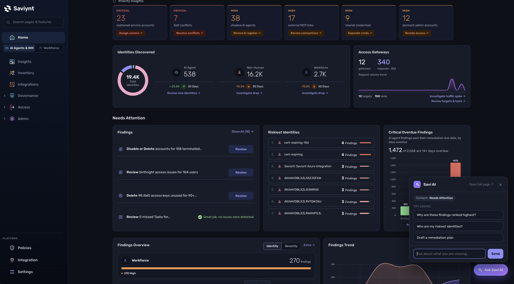
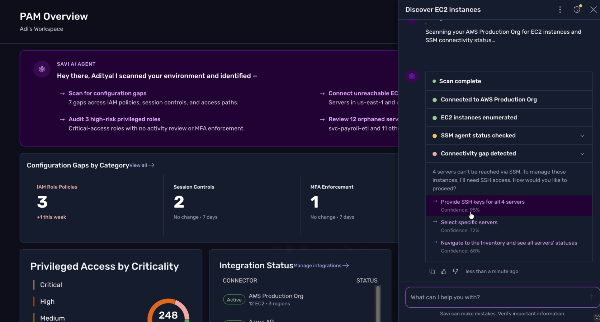
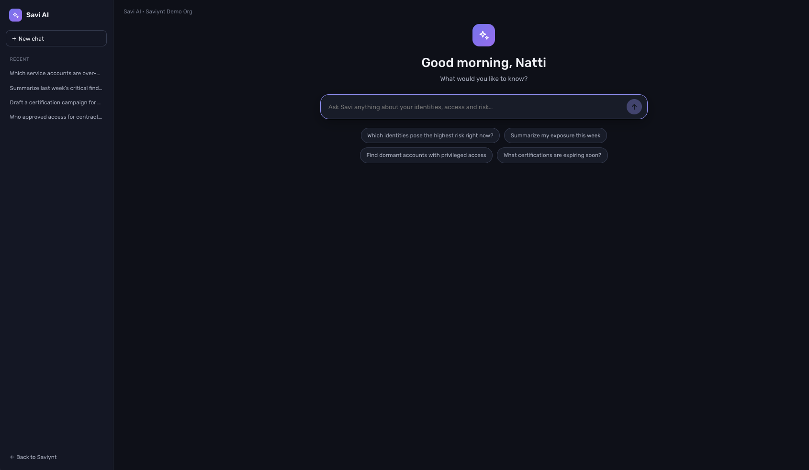

Intent first
Start with the outcome someone wants, not the feature they must find.
Design vision · AI strategy · Experience leadership
AI is changing what people expect from enterprise software. Instead of navigating dashboards and stitching together workflows, people should be able to start with what they need to accomplish—their intent—and move directly toward it.
At Saviynt, I set the experience direction for Savi, the company’s agentic experience. The vision is to help people move complex work forward with AI that guides tasks, coordinates agents, and takes action across the product, while keeping people informed and in control. I stay hands-on in shaping the flows and interactions shown here.
That vision comes to life through contextual help, guided work in a side panel, and a dedicated workspace for longer tasks. At every step, people can inspect what’s happening, direct the work, or take over.



01 · Discover and act


A user can type a task in their own words—for example, “Help me connect to servers I can’t reach.” Savi checks the cloud environment and explains what it finds. In this example, it identifies four EC2 instances: virtual servers running in Amazon Web Services (AWS).
Then the user can choose how to proceed: take action themselves, ask Savi to do the work, or navigate to the relevant area.
The user decides how much to delegate. The agent makes the situation and available choices visible before taking action.
Once the user chooses an agent-led path, Savi presents the right interaction in its side panel. Here, a focused widget collects the required SSH key and lets the user proceed without losing context.
Guidance, user input, and task execution stay together.
02 · Coordinate

People can operate several agents and move between their work from one place. The activity control signals when an agent needs input or a task has completed. Opening it reveals active work, pinned conversations, and archived sessions.
Clear status and accessible history make delegation manageable without asking users to monitor every step.
03 · Help in context

A floating Savi AI button opens a compact popup that takes little space. It can suggest support based on the current page while still letting the user ask for anything.
When the user chooses to continue, the popup expands into a full side panel. That expanded state is part of the flow; no separate screenshot was supplied.

During infrastructure discovery, Savi explains what it found, recommends where to start, and helps users take the next step. The product remains visible alongside the conversation, so users can inspect the system and act with context.
Help appears where people need it, rather than sending them on a detour to another flow.
04 · Onboard

PAM onboarding is one example of a broader opportunity: AI can automate steps and guide people across product flows that would otherwise feel disconnected and cumbersome.
Here, Savi prepares what it can, explains what needs a decision, and helps coordinate work with another team. The same approach can make other complex tasks easier to understand and complete.
05 · Choose your way in

At any point, users can open Savi AI from the global control and switch to a full-page agent experience. They can start a conversation, operate multiple agents, and return to earlier or pinned work.
Organizations can also make this the landing page users see after login.

The traditional navigation remains available alongside the agent experience. A customizable launchpad lets users arrange product apps and services and add shortcuts to tools they use—including external services.
The result supports different work styles while centering the platform on each user’s needs.
Start with the outcome someone wants, not the feature they must find.
Let people delegate, inspect, intervene, or complete work themselves.
Support agent-first and traditional workflows as complementary paths.
The bigger idea
My role is to set the vision, define experience principles, and move work from concept toward product direction. I stay close to the design—shaping interactions, exploring alternatives, and working directly on concepts—while collaborating with the team to bring the broader experience to life.
A platform that understands intent, helps carry out the work, and keeps people informed and in control.
My contribution: Experience vision, direction, and hands-on design exploration, developed with the team. The examples shown represent work I directly shaped and led; individual screens and implementation were collaborative efforts.